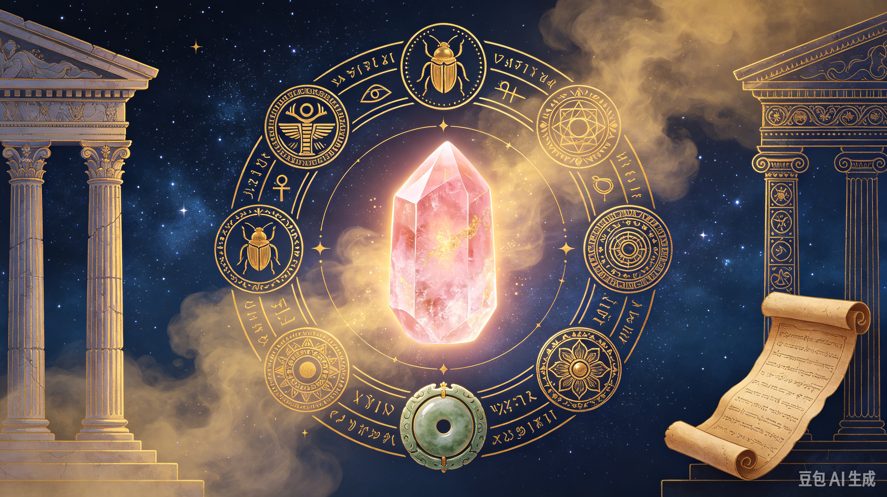

Legends & Stories of Crystals

Since ancient civilizations, humans regarded crystals as sacred stones.
- Ancient Egypt：Cleopatra wore rose quartz, believed it preserved youth and beauty. Quartz was used in ritual amulets.
- Ancient Greece：People thought clear quartz was frozen eternal ice from gods, impossible to melt.
- Chinese tradition：Jade represents virtue, purity and protection. It was the stone of nobles for thousands of years.
- Medieval Europe：Amethyst was thought to guard against intoxication and evil spirits.